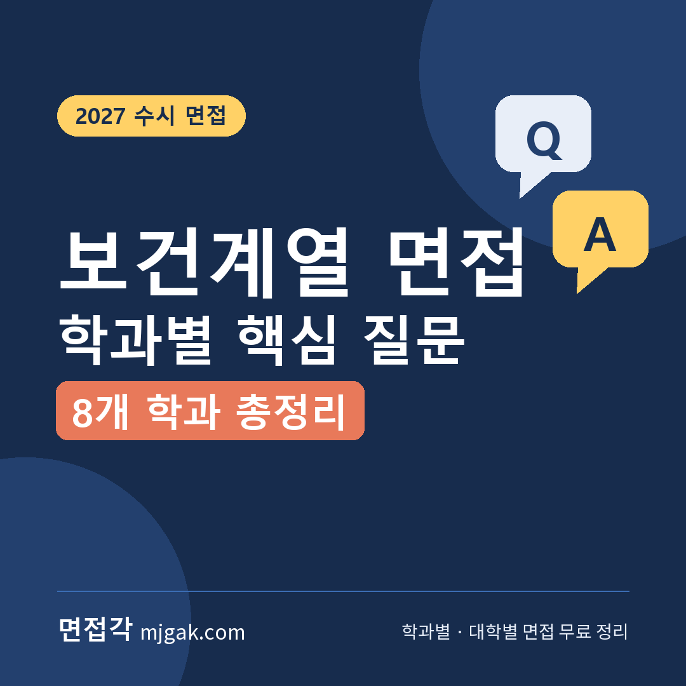
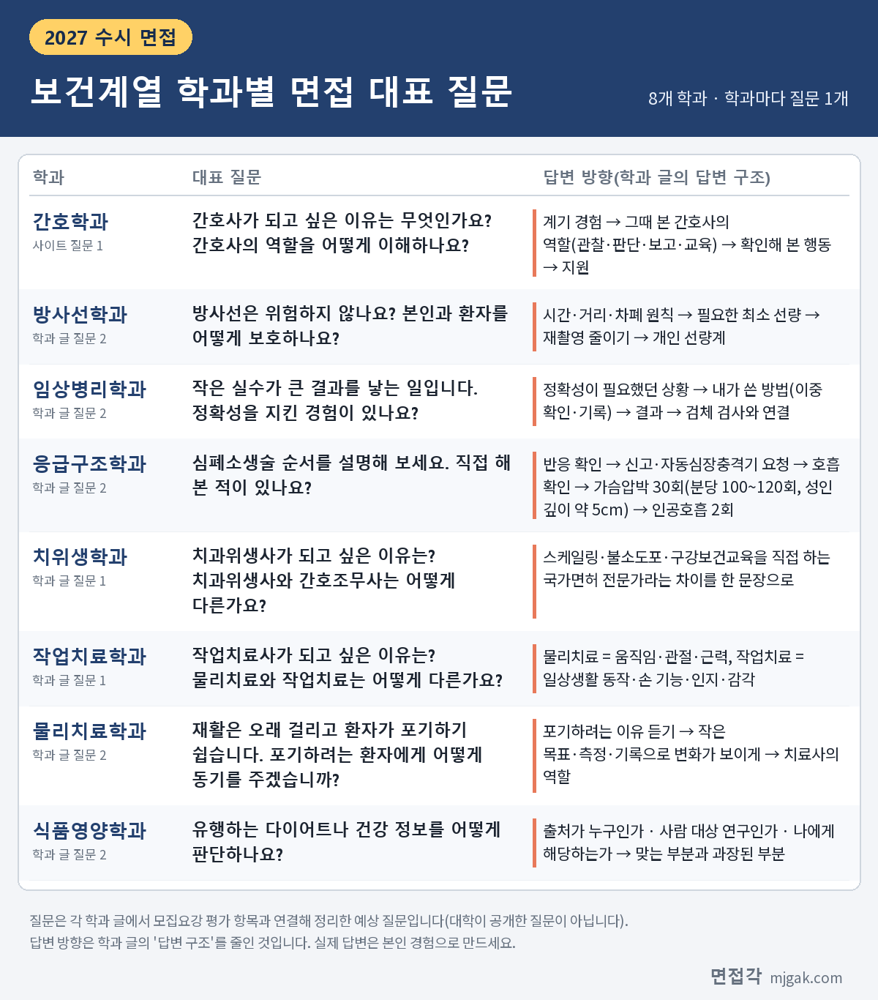

Ctrl+V (서식 유지됨)제목
본문 (이 영역 전체가 복사됩니다)
📷 여기에 이미지 넣기 — 썸네일 — thumb-health.png (대표 이미지로 지정)
보건계열 학과는 학과마다 면접에서 묻는 직업이 다릅니다. 간호사, 방사선사, 임상병리사, 응급구조사, 치과위생사, 작업치료사, 물리치료사, 영양사는 하는 일도, 다루는 환자도 다릅니다. 그런데 면접각 블로그와 사이트에 정리한 보건계열 학과 8곳의 면접 질문을 나란히 놓으면 비슷한 틀이 보입니다. 이 글은 그 8개 학과의 대표 질문을 한 장으로 모으고, 8개 학과에 공통으로 나온 질문 묶음, 학과별 핵심 질문 1~2개와 답변 방향을 정리한 목차입니다. 학과마다 대학별 면접 방식, 답변 예시, 2주 준비 순서는 각 학과 글에 있으니 아래 ▷ 줄에서 이어 보세요. 2027학년도 수시로 보건계열 학과에 지원한 고3과 재수생, 여러 학과를 함께 지원해 한 번에 비교하고 싶은 학생이 읽으시면 됩니다.
1. 한 장으로 보는 학과별 대표 질문
📷 여기에 이미지 넣기 — 이미지 1 — health-table.png
표의 질문은 각 학과 글(간호학과는 사이트 학과 페이지)에서 모집요강 평가 항목과 연결해 정리한 예상 질문입니다. 대학이 공개한 질문이 아니고, 답변 방향은 학과 글의 답변 구조를 줄인 것입니다. 실제 답변은 본인 경험으로 만드세요.
2. 8개 학과에 공통으로 나온 질문 4가지
블로그 학과 글 7편(방사선·임상병리·응급구조·치위생·작업치료·물리치료·식품영양)과 사이트 간호학과 페이지, 모두 8개 학과의 질문 6개씩을 이 글에서 직접 세어 묶었습니다.
1. 지원 동기와 그 직업이 하는 일 (지원 동기 8곳, 하는 일·차이 7곳)
여덟 곳 모두 첫 질문이 지원 동기입니다(식품영양학과는 "관심을 갖게 된 계기"). 식품영양학과를 뺀 7곳은 같은 질문에 "그 직업이 하는 일"이나 "다른 직업과의 차이"를 함께 묻습니다. 치위생학과는 간호조무사와의 차이, 작업치료학과와 물리치료학과는 서로의 차이입니다. 답변 구조는 8곳 모두 계기가 된 경험(장면)에서 시작하고, 식품영양을 뺀 7곳은 이어서 그때 본 그 직업의 역할이나 차이를 넣습니다.
2. 어려운 환자·보호자를 대하는 상황 질문 (7곳)
간호(폭언하는 환자), 방사선(검사를 무서워하는 환자), 임상병리(채혈을 무서워하는 환자), 응급구조(술 취해 처치를 거부하는 환자), 치위생(입을 안 벌리는 어린이), 작업치료(활동을 거부하는 아동, "언제 다 낫나요" 묻는 보호자), 물리치료(재활을 포기하려는 환자)에 나옵니다. 답변 구조에 겹치는 부분이 있습니다. 간호·방사선·임상병리·물리치료에는 환자가 왜 그러는지 이유나 원인을 먼저 살피는 단계가 있고, 치위생·작업치료는 억지로 하지 않고 작게 나누라고 합니다. 간호·임상병리·응급구조·치위생에는 혼자 해결하지 않고 다른 사람과 함께 대응하는 단계가 있습니다(간호는 절차와 동료, 임상병리는 선배·동료와 상의, 응급구조는 보안·상급자 보고, 치위생은 치과의사와 상의).
3. 생명과학·화학 같은 기초 과목 (7곳)
간호(생리학·약리학 공부와 실습 병행), 방사선(물리와 생명과학), 임상병리(항원-항체 반응), 치위생(구강 구조), 작업치료(손 기능), 물리치료(근육이나 관절 하나), 식품영양(화학과 생명과학)에 나옵니다. 임상병리·치위생·작업치료·물리치료는 원리를 넓게 말하지 말고 하나만 정확히 준비하라고 하고, 간호·방사선·식품영양은 약한 과목을 숨기지 말고 보완 계획을 말하라고 합니다.
4. 졸업 후 진로 (8곳)
간호학과는 "10년 후 모습", 식품영양학과는 영양사·식품 연구·식품 회사 중 어떤 진로인지, 나머지 6곳은 "졸업 후 진로"로 묻습니다. 방사선·임상병리·응급구조·치위생·작업치료·물리치료 6곳은 답변 구조가 국가시험(국가고시)에서 시작하고, 식품영양도 영양사 국가시험 같은 자격 경로를 넣으라고 합니다. 1지망만 말하지 말고 다른 길도 함께 말하라는 것도 간호를 뺀 7곳에 겹치는데, 임상병리·응급구조·치위생·작업치료·물리치료는 "두 갈래 이상"이라고 적었습니다.
이 밖에 체력(응급구조·물리치료), 검사 자동화와 AI(방사선·임상병리), 고령화(작업치료·물리치료)처럼 두 학과에만 겹치는 질문도 있습니다.
📷 여기에 이미지 넣기 — 이미지 2 — 제미나이 생성: 밝은 보건 실습실에서 청진기·혈압계·인체 골격 모형·시험관 랙 옆에서 자신 있게 답하는 학생(실사) / "제미나이 프롬프트 1"
(AI로 만든 이미지로, 실제와 다를 수 있습니다)
3. 학과별 핵심 질문과 답변 방향
학과마다 학과 글(간호학과는 사이트 학과 페이지)의 "공통 원칙" 한 문장과 대표 질문, 답변 방향을 적었습니다. 괄호 안 대학은 그 학과 글에서 2027학년도 수시모집요강으로 면접 방식을 비교한 곳입니다. 자세한 근거는 각 학과 글에 있습니다.
▶ 간호학과 (을지대·아주대·울산대·중앙대)
원칙: "돕는 사람이 아니라 관찰하고 판단하는 사람으로 말한다."
질문: "간호사가 되고 싶은 이유는 무엇인가요? 간호사의 역할을 어떻게 이해하나요?" / "환자가 무례하게 굴거나 폭언을 하면 어떻게 하겠습니까?"
답변 방향: 지원 동기는 계기 경험 다음에 그때 본 간호사의 역할(관찰·판단·보고·교육)을 말합니다. 폭언 질문은 원인(통증·불안·섬망)을 먼저 보고, 침착하되 경계를 말하고, 위험하면 혼자 감당하지 않고 절차와 동료에게 넘깁니다.
간호학과는 면접각 사이트 학과 페이지에 질문 6가지와 네 대학 면접 방식을 정리했습니다.
▶ 방사선학과 (을지대·청주대)
원칙: "사진을 찍는 사람이 아니라 진단의 첫 단계를 만드는 사람으로 말한다."
질문: "방사선사가 되고 싶은 이유는 무엇인가요? 방사선사가 하는 일을 알고 있나요?" / "방사선은 위험하지 않나요? 본인과 환자를 어떻게 보호하나요?"
답변 방향: 업무 범위는 영상 검사, 방사선 치료, 핵의학 세 영역으로 말합니다. 안전 질문은 시간·거리·차폐, 필요한 최소 선량, 재촬영 줄이기로 답합니다.
▶ 임상병리학과 (남서울대·을지대·청주대)
원칙: "검사하는 사람이 아니라 믿을 수 있는 결과를 책임지는 사람으로 말한다."
질문: "작은 실수가 큰 결과를 낳는 일입니다. 정확성을 지킨 경험이 있나요?" / "생명과학과 화학은 어떻게 공부했나요? 항원-항체 반응을 설명해 보세요."
답변 방향: "꼼꼼한 편입니다" 대신 실수를 발견하고 바꾼 방법(이중 확인·기록)을 말합니다. 원리 질문은 하나를 정확히 준비합니다. 학과 글에서 소개한 을지대 모집요강의 2026학년도 공개 문항(모집단위 표시 없음)에도 비예기항체를 묻는 문항이 있었습니다.
▶ 응급구조학과 (백석대·선문대·남서울대)
원칙: "영웅이 아니라 절차로 말한다."
질문: "심폐소생술 순서를 설명해 보세요. 직접 해 본 적이 있나요?" / "응급실에서 술 취한 환자가 폭언을 하며 처치를 거부합니다. 어떻게 대처하겠습니까?"
답변 방향: 심폐소생술은 가슴압박 30회와 인공호흡 2회, 분당 100~120회, 성인 기준 깊이 약 5cm를 정확히 말합니다. 폭언 상황은 안전 확보 → 환자 상태 평가(취했어도 응급일 수 있음) → 보안·상급자 보고 순서입니다.
▶ 치위생학과 (백석대·선문대·남서울대·청주대)
원칙: "치료를 돕는 사람이 아니라 예방을 책임지는 전문가로 말한다."
질문: "치과위생사가 되고 싶은 이유는 무엇인가요? 치과위생사와 간호조무사는 어떻게 다른가요?" / "치과 치료를 무서워하는 어린이 환자가 울면서 입을 안 벌립니다. 어떻게 하겠습니까?"
답변 방향: 치과위생사는 스케일링·불소도포·구강보건교육을 직접 하는 면허 전문가라는 차이를 한 문장으로 말합니다. 어린이 환자는 억지로 하지 않고 기구 보여 주기, 작은 단계, 보호자 협조, 안 되면 치과의사와 상의해 다음 방문으로 잇습니다.
▶ 작업치료학과 (백석대·청주대)
원칙: "몸을 고치는 사람이 아니라 삶을 되찾게 하는 사람으로 말한다."
질문: "작업치료사가 되고 싶은 이유는 무엇인가요? 물리치료와 작업치료는 어떻게 다른가요?" / "보호자가 '언제 다 낫나요'라고 자꾸 묻습니다. 어떻게 답하겠습니까?"
답변 방향: '작업'은 밥 먹기·옷 입기·글쓰기 같은 일상의 의미 있는 활동이라고 한 문장으로 말합니다. 보호자 질문은 거짓 희망 없이, 목표를 할 수 있는 것이 늘어나는 것으로 잡고 지난주보다 나아진 것을 보여 줍니다.
▶ 물리치료학과 (선문대·백석대·경남대·을지대)
원칙: "환자를 고치는 사람이 아니라, 환자가 스스로 회복하게 돕는 사람으로 말한다."
질문: "재활은 오래 걸리고 환자가 포기하기 쉽습니다. 포기하려는 환자에게 어떻게 동기를 주겠습니까?" / "고령화 사회에서 물리치료의 역할과 전망은 어떻게 보나요? 물리치료사가 너무 많아지고 있다는 말도 있는데요."
답변 방향: 격려보다 작은 목표·측정·기록으로 변화가 보이게 합니다. 공급 과잉 질문은 부정하지 말고 인정한 뒤 전문 분야·자격으로 차별화하는 방향을 말합니다. 질문 1은 작업치료학과처럼 두 치료의 차이를 함께 묻습니다.
▶ 식품영양학과 (삼육대·명지대·숙명여대·경희대)
원칙: "좋은 음식이 아니라 근거를 말한다."
질문: "유행하는 다이어트나 건강 정보를 어떻게 판단하나요?" / "영양사, 식품 연구, 식품 회사 중 어떤 진로를 생각하나요?"
답변 방향: 건강 정보는 출처가 누구인가, 사람 대상 연구인가, 나에게 해당하는가로 따지고 맞는 부분과 과장된 부분을 나눕니다. 진로는 회사 이름보다 역할과 자격 경로(영양사 국가시험 등)로 답합니다.
4. 의약 계열 학과 글도 있습니다
약학과: "약의 효과와 부작용 사이에서 어떻게 판단해야 하나요?" 부작용 없는 약은 없다는 것에서 시작해, 같은 약도 환자(나이·간·신장·다른 약)에 따라 판단이 다르다고 말합니다.
수의예과: "수의사가 되고 싶은 이유는 무엇인가요? 동물을 좋아하는 것만으로 충분할까요?" 수의사가 동물과 함께 보호자를 상대하는 직업이라는 점을 넣습니다.
5. 보건계열 면접, 이 순서로 준비하세요 (이 글이 제안하는 방법)
아래 순서는 학과 글들의 공통 질문을 바탕으로 이 글이 제안하는 연습 방법이고, 대학이 정한 기준이 아닙니다.
1. 지원 대학 모집요강에서 내 전형의 면접 방식, 평가 항목, 면접일을 먼저 확인합니다.
2. 지원 학과 글의 원칙 한 문장을 내 말로 바꿔 지원 동기 답변에 넣습니다. 학과 글들은 한 답변을 40~60초로 권합니다.
3. 상황 질문 하나를 "이유 듣기 → 설명·작은 단계 → 혼자 감당하지 않기" 틀로 연습합니다.
4. 기초 과목에서 설명할 원리 하나를 정하고, 약한 과목의 보완 계획을 한 문장으로 준비합니다.
5. 국가시험부터 시작하는 진로 답변에 병원 밖 길을 두 갈래 이상 넣습니다.
6. 녹음해서 듣고, 학생부에 적힌 보건 관련 활동을 "왜, 어떻게, 무엇이 달라졌나"로 다시 설명해 봅니다.
6. 함께 보면 좋은 글
보건계열 면접은 학과마다 묻는 직업이 다르지만, 그 직업이 실제로 하는 일을 알고, 어려운 상황에서 어떤 순서로 움직일지를 내 경험으로 말하는 자리입니다.
※ 이 글의 질문과 답변 방향은 면접각 블로그 학과 글(방사선학과, 임상병리학과, 응급구조학과, 치위생학과, 작업치료학과, 물리치료학과, 식품영양학과, 약학과, 수의예과)과 면접각 사이트 간호학과 페이지에서 가져왔습니다. 대학 이름은 각 학과 글이 2027학년도 수시모집요강으로 비교한 대학입니다. 공통 질문의 학과 수는 이 글에서 직접 센 값입니다. 면접 방식과 일정은 대학마다 다르고 바뀔 수 있으니 지원 대학 입학처 공지를 꼭 확인하세요.
학과별 면접 질문·답변 예시와 대학별 2027학년도 면접 정보, 대학이 공개한 실제 면접 기출을 무료로 정리한 사이트입니다. 회원가입 없이 바로 볼 수 있고, 질문을 무작위로 뽑아 60초 타이머로 연습하는 모의 면접도 있습니다. 학과 목록에서 내 학과를 찾아보세요.
태그 (#은 에디터가 자동으로 붙이므로 그대로 붙여 넣어도 됩니다)
넣을 이미지 목록 (docs/promo/img 폴더)


제미나이 프롬프트 1 — 밝은 보건 실습실에서 청진기·혈압계·인체 골격 모형·시험관 랙 옆에서 자신 있게 답하는 학생(실사) (4:3) — 제미나이에 그대로 붙여 넣어 이미지를 만드세요